VLDB 2026 · Industrial Track


Clock2Q+
Correlation-Aware Cache Replacement for Metadata Caches
Deployed in VMware vSAN
Yiyan Zhai1 Bintang Dwi Marthen2 Sarath Balivada3 Vamsi Sudhakar Bojji3 Eric Knauft3 Jitender Rohilla3
Jiaqi Zuo3 Quanxing Liu3 Maxime Austruy3 Junlong Gao3 Wenguang Wang3 Juncheng Yang2
Jiaqi Zuo3 Quanxing Liu3 Maxime Austruy3 Junlong Gao3 Wenguang Wang3 Juncheng Yang2
1Carnegie Mellon University 2Harvard University 3Broadcom
The setting
What is a metadata cache?
- Data cache = the payload.
- Metadata cache = the index that locates it. Maps logical addresses → physical addresses.
- The metadata cache is the hot path — touched on almost every access.
Judged not only on miss ratio, but also CPU overhead, scalability, and simplicity.
Problem
Why metadata is different
Structural locality: a page packs many keys
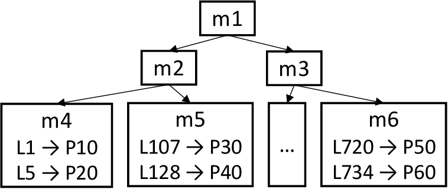
- A metadata page = a B-tree leaf holding hundreds of key → location mappings — not one key.
- So many unrelated lookups land on the same page.
- The page looks hot — but that's structure, not real popularity.
Problem
The problem
What is a correlated reference?
The trap: counting each hit as a vote for hotness. The page is busy by structure, not popularity.
Problem
Why existing policies fall short
Two opposite mistakes
S3-FIFO — admits cold blocks
uses a reference bit · 0 / 1 = "hit again?"
Clock2Q / 2Q — delays hot blocks
no reference bit — hot blocks must be dropped to Ghost
a burst promotes a cold page
a hot block must miss once first
Problem
Clock2Q+
Insight: a correlation window as a filter
Where a re-hit happens tells you whether the popularity is real.
S3-FIFO (window off): any re-hit → Ref = 1 → even a burst pollutes the cache.
Clock2Q+ · inside the window: same burst → Ref stays 0 → ages out to Ghost.
Clock2Q+ · beyond the window: real reuse → Ref = 1 → promoted to Main.
Design
Clock2Q+ in action
Design
Evaluating a metadata policy
Turning public block traces into metadata traces
- No public metadata-cache traces.
- Idea: map each block to its leaf page: leaf = ⌊ block number / fan-out ⌋ (fan-out = 200)
- Reproducible from any public block trace.
106
CloudPhysics traces
2.1B
requests
libCacheSim
simulator
10
SOTA baselines
Method
Result — miss ratio
Lowest miss ratio across 10 SOTA policies
Each box is a policy's miss ratio relative to Clock2Q+. Below 0 = worse than Clock2Q+.
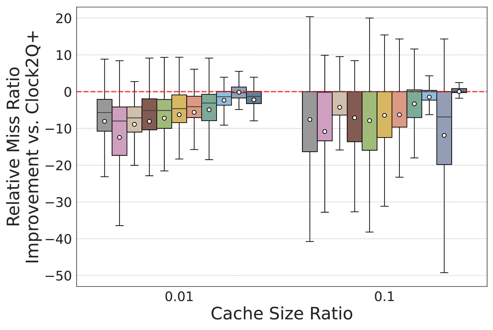
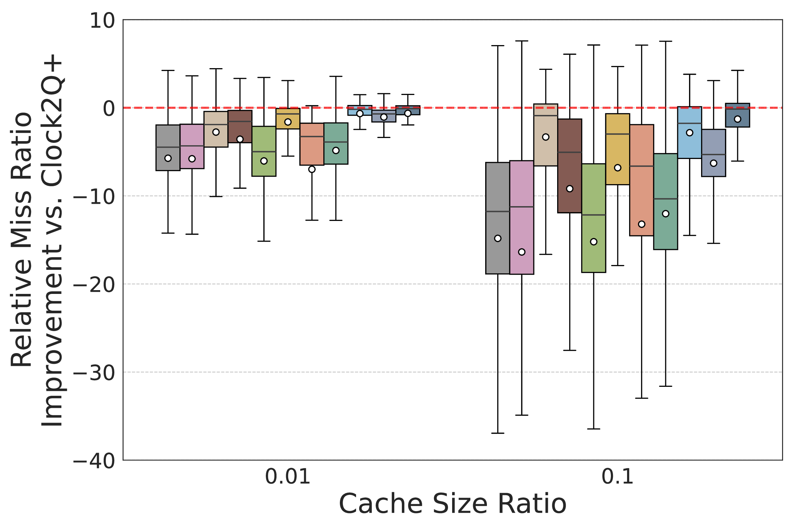
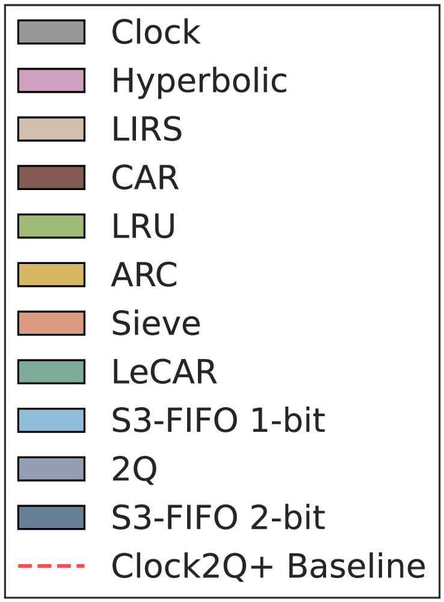
Best median & mean improvement at every cache size — up to 28.5% per-trace over S3-FIFO on metadata.
Results
Deployment · a decade of evolution
How vSAN's cache evolved
2Q
FIFOMain LRUGhost
three-queue baseline
the classic · 1994
→
Clock2Q
FIFOMain ClockGhost
LRU → Clock (lower CPU)
vSAN OSA · VDFS · early ESA
→
S3-FIFO
FIFO+ Ref bitClockGhost
+ Ref bit (direct promotion)
2023 · state of the art
→
Clock2Q+
FIFO+ windowClockGhost
+ correlation window (filters bursts)
vSAN · vSAN File Services, today
Simplicity — a first-class goal: every step stayed easy to implement, debug, and operate.
Evolution
Takeaways
Clock2Q+
- Correlated references are a real, costly metadata pattern: a short burst makes a cold page look hot.
- The correlation window is a one-line change: filter bursts, still promote genuinely hot blocks directly.
- Best miss ratio among SOTA on metadata and data — and it is deployed in VMware vSAN.
- Low overhead, scalable, dirty-aware, resizable — simplicity pays off in production.
Reproducible in libCacheSim — Clock2Q+ & the metadata-trace method are upstreamed.
Takeaways
Thank you
Clock2Q+
Correlation-Aware Cache Replacement for Metadata Caches · deployed in VMware vSAN
Get in touch
Yiyan Zhai (CMU) · yiyanz@andrew.cmu.edu
Wenguang Wang (Broadcom) · wenguang.wang@broadcom.com
Juncheng Yang (Harvard) · juncheng@seas.harvard.edu
Related sites
libcachesim.com — simulator
cachemon.org — project home
dataset.libcachesim.com — traces
python.libcachesim.com — Python API
cachemon.org — project home
dataset.libcachesim.com — traces
python.libcachesim.com — Python API
github.com/1a1a11a/libCacheSim ↗
Thank you
Engineered for production
Built to run safely at scale
⚡
Fast & lean
Array-based, allocation-free; the hit path is one hash lookup + a Ref-bit flip.
🧵
Scales on cores
Per-bucket mutex + atomic queue indices — no global lock.
🛡️
Robust under load
Skips dirty pages until flushed; capped scan per eviction — no CPU spikes, no infinite loops.
↔️
Resizes online
Grow / shrink the queues live via a background thread.
Simplicity — a first-class goal: simple data structures & no adaptive tuning.
Backup
Backup
Backup — why it works
It promotes far fewer blocks — and the right ones
| Small FIFO → | Main | Ghost |
|---|---|---|
| S3-FIFO | 88,529 | 126,897 |
| Clock2Q+ | 20,762 | 186,959 |
Clock2Q+ promotes < ¼ as many Small-FIFO blocks into Main.
Correlated bursts are filtered out instead of polluting Main.
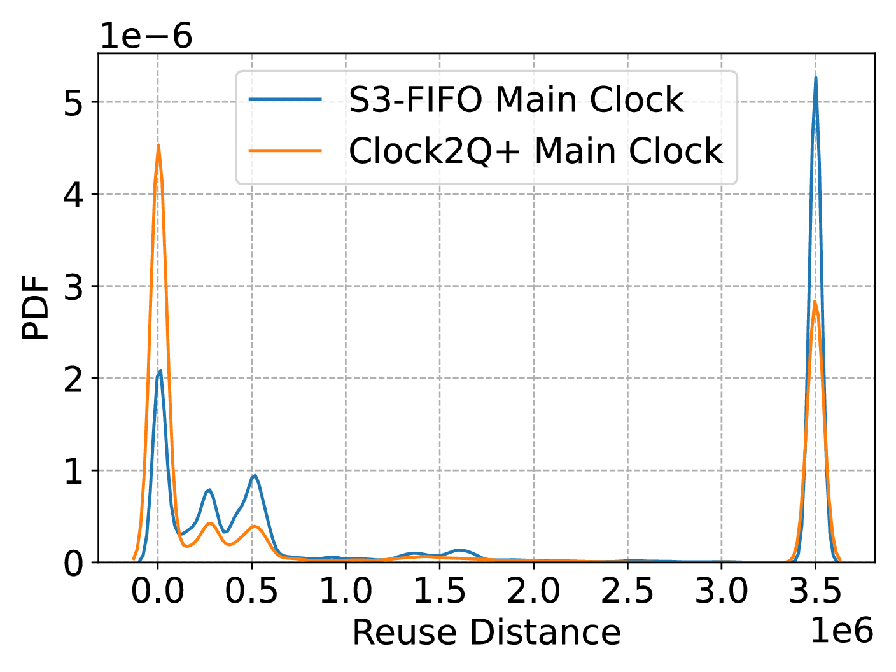
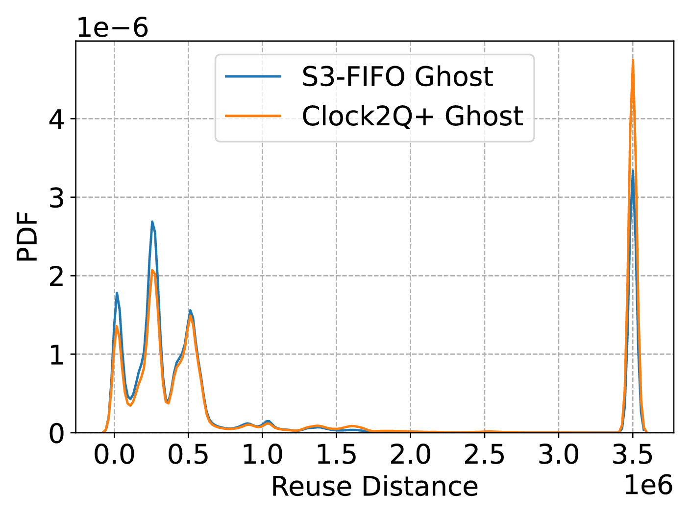
Backup
Backup
Backup — correlated references are real
Bursts show up across production traces
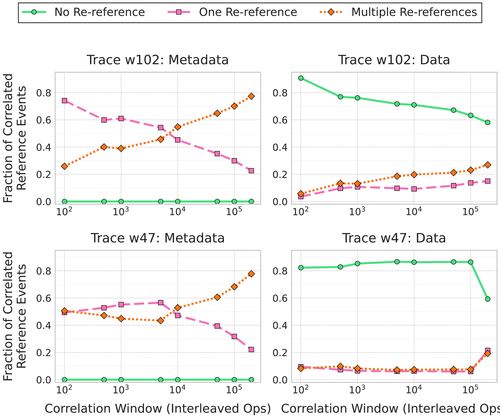
Backup
Backup
Backup — miss ratio vs. cache size
Lowest curve across the whole range
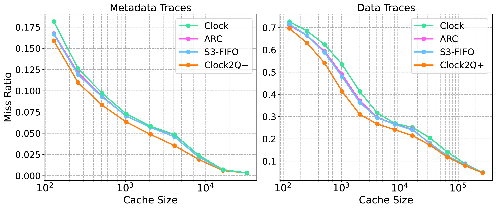
Backup
Backup
Backup — sensitivity
Robust to the window size (no tuning)
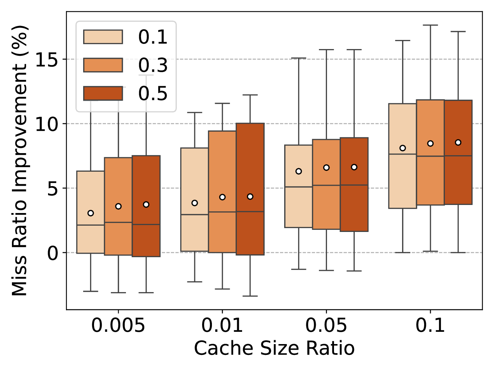
Backup
Backup
Backup — production hardening
Dirty pages & bounded clock-hand work
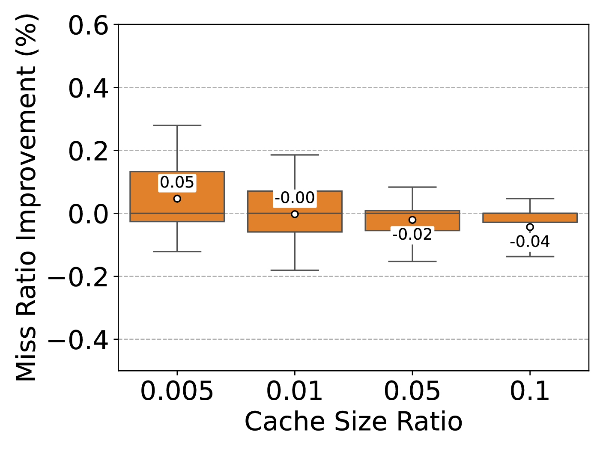
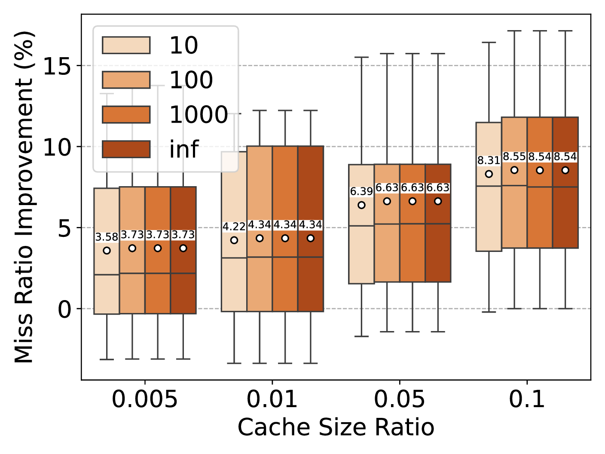
Backup
Backup
Backup — limitation
Where it doesn't win: non-block object caches
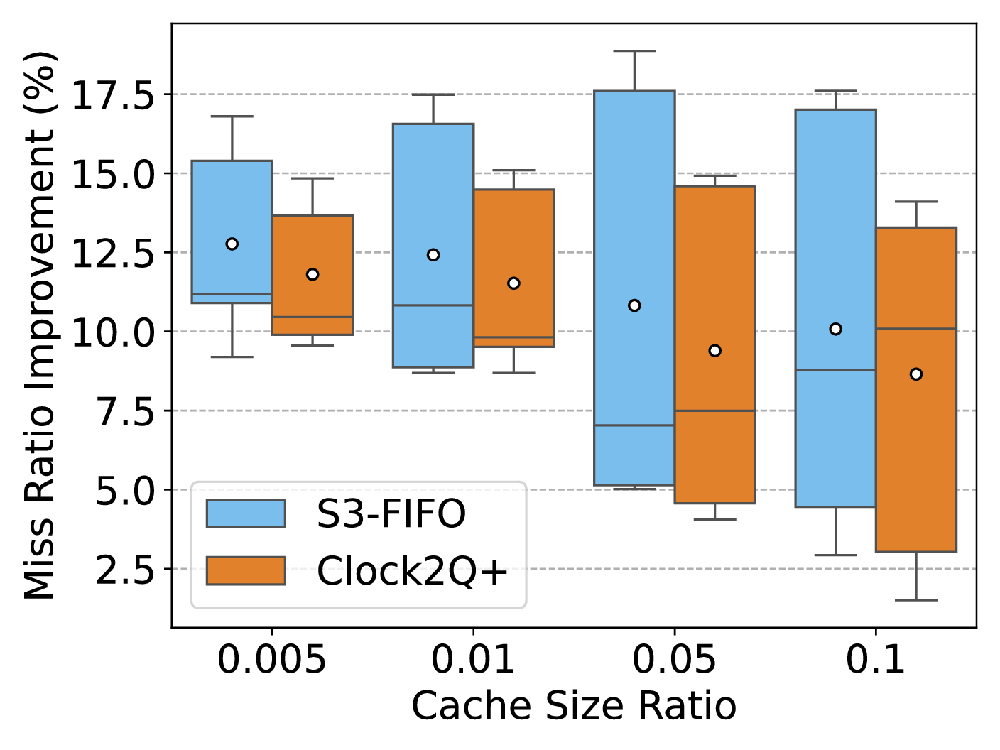
Backup